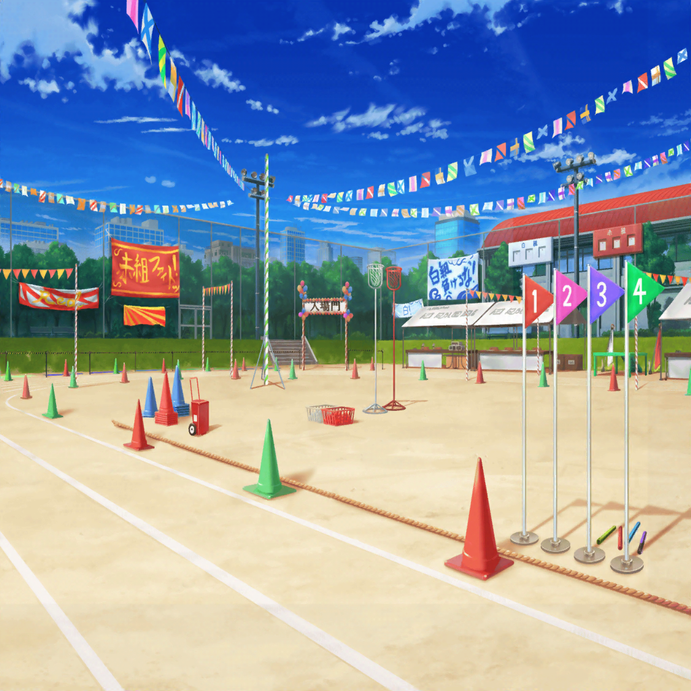

花咲川女子学園 グラウンド 赤組陣地
はぐみ
実はね……
はぐみ、勝ち負けがつくことが、
ちょっとだけ苦手なんだ
はぐみ
昔、ソフトボールの試合で、
相手チームに逆転勝ちしたことがあったんだけど……
はぐみ
その試合を決めっちゃったのが、はぐみのホームランだったんだ
沙綾
それって、すごいことだよ？
普通は嬉しいことだと思うけど……？
はぐみ
うん、はぐみもホームラン打った時は
すっごく嬉しかった
はぐみ
でも……試合が終わって、
相手チームのくやしそうな顔を見てたら、
なんかモヤモヤっていうか、ぐるぐるっていうか……
はぐみ
それを見てたら……
だんだん嬉しい気持ちがなくなってきちゃって……
沙綾
素直に喜べなくなっちゃった……って、こと？
はぐみ
う、うん……
そのことがあってから、勝ち負けのつくことが、
ちょっと苦手になっちゃったんだ……
有咲
ん？
でも北沢さんって、今でもソフトボール続けてるよね？
それは平気なわけ？
はぐみ
うん、ソフトボール自体はすっごく好きだから
はぐみ
全力で走って、ボールを追って、思いっきりバットを振って……
そういうのは本当に楽しいからね！
だから、勝ち負けのことはなるべく考えないようにしてるんだ
はぐみ
なんか、さっきからごめんね？
ずっとはぐみらしくないこと言ってるよね……
イヴ
そんなことないです！
ハグミさんは、とても優しい人です！
彩
うん、私もそう思う。
相手の気持ちを考えるって、思いやりがあっていいことだよ
はぐみ
イヴちん、彩先輩……ありがとう
有咲
つーかさ、北沢さん……
ちょっと深く考えすぎなんじゃないか？
有咲
こう言ったら、元も子もないけど……たかが体育祭だぞ？
有咲
別に体育祭で負けたからって部活を引退する、
とかじゃねーんだから、もっと気楽にやればいいんじゃねーの？
はぐみ
うう……
それはわかってるんだけど……
彩
せっかくの体育祭だよ！
そんな暗い顔してないで、パーッと、楽しんじゃおー♪
……ねっ？
沙綾
はぐみ……
負けたら確かにくやしいけどさ、
でも、それだけじゃないと思うよ？
沙綾
あんまり、うまく言えないけど……
負けることで得られるものだって、きっとあるんじゃないかな？
はぐみ
そう、なのかな……
アナウンス
『まもなく午後の競技がはじまります。
午後の最初の種目は、１年生全体によるダンスです』
有咲
ん……ダンスの時間か
香澄
有咲ー、さーやー！
ダンスだよダンス！
沙綾
わっ、香澄！？
び、びっくりしたぁ……
有咲
つーか、なんでこっちに来てるんだよ！
お前は白組だろっ！？
香澄
えー、ダンスは１年生全員で踊るじゃん！
それなら、こっちに来たっていいでしょ？
イヴ
そうですね！
次のダンスは勝負じゃないですよ！
ハグミさん、みんなで楽しみましょう！
はぐみ
うん！
はぐみ、このダンスが一番楽しみだったんだ～！
たえ
あ、香澄いた
りみ
びっくりしちゃったよ。
香澄ちゃん、いきなり走って行っちゃうんだもん
香澄
ごめんごめん！
有咲達を迎えに来てたんだ！
有咲
別に香澄に迎えに来てもらわなくたって……
香澄
だってだって、ダンスは白組と赤組、一緒にできるじゃん！
ここは敵も味方もなく、仲良くやろーよぉ！
ねっ、はぐ！？
はぐみ
うん！
ダンスには、敵も味方もないよ！
みんなで頑張ろー！
彩
私も１年生のダンス見るの楽しみにしてるね♪
もうみんな集まり始めてるみたいだから、
そろそろ行った方がいいよ！
香澄
あー！
ほんとだ、急がなきゃっ！
みんな、行こう！
たえ
香澄、ダンスって私も出るんだっけ？
りみ
おたえちゃん、ダンスは全員参加だよ～
有咲
はぁ……騒がしいやつらだな。
しょうがない、私達も行くか
イヴ
はい！
そうですね！
沙綾
はぐみ、私達も行こう。
ダンス、思いっきり楽しもう！
はぐみ
うん！
はぐみ、全力で踊ってくるよっ！
彩
みんなー！
行ってらっしゃーい！